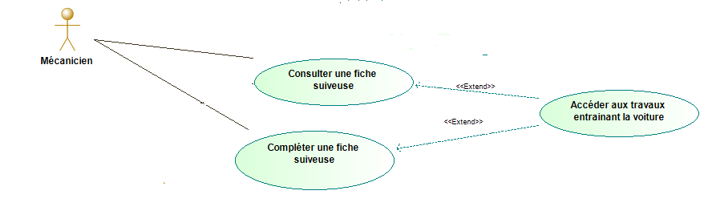
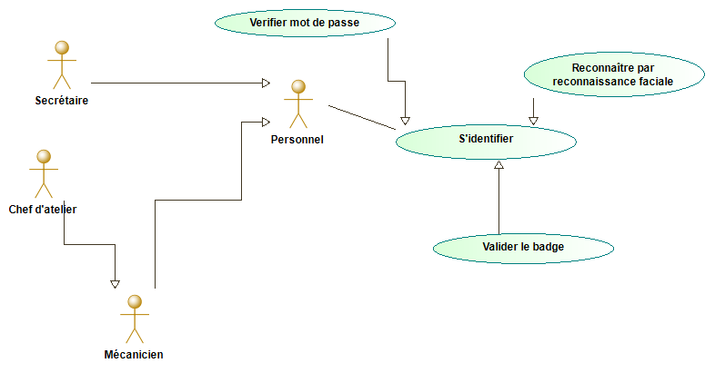
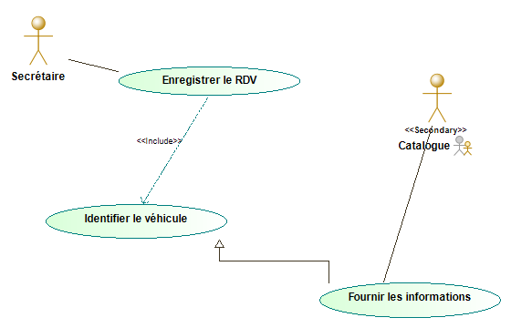
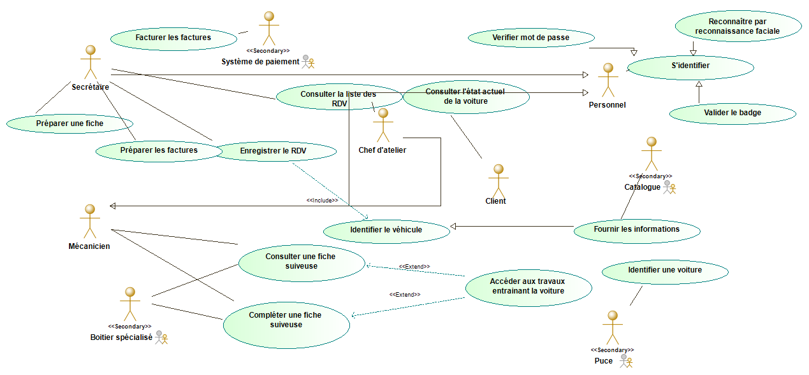
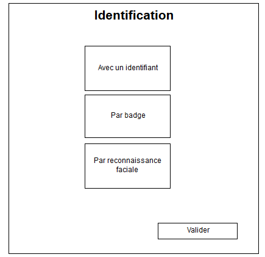
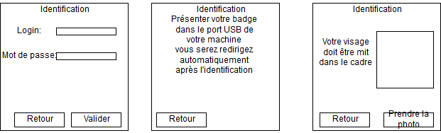
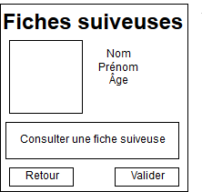
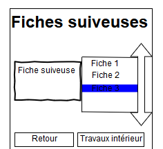
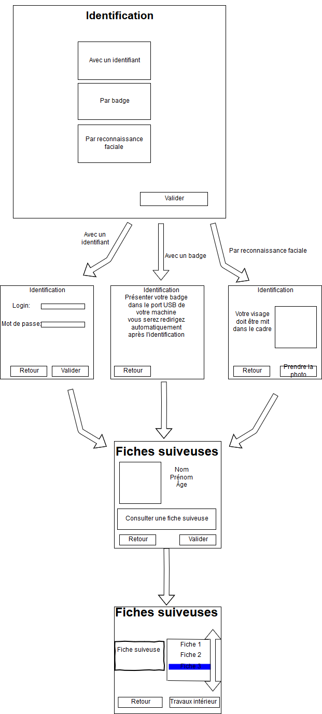
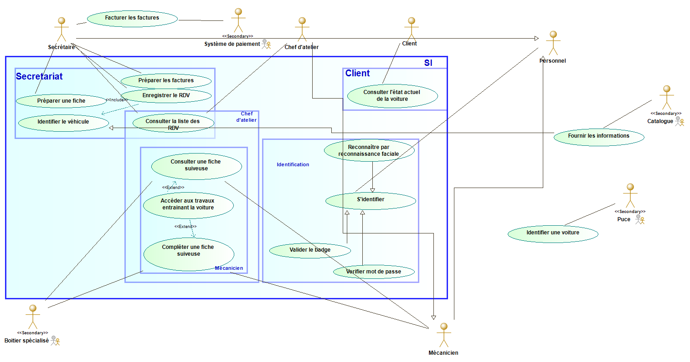

Les relations entre cas d'utilisation
Ce TD va surtout se focaliser sur les relations entre cas d'utilisation. Nous avions vu les différentes relations dans le TD précédent.
Rappel :
L'inclusion (include)
L'extension (extend)
La spécialisation (généralisation)
L'inclusion se modélise en pointillé avec le terme include, ça permet de factoriser une relation. L'inclusion n'est pas optionnel, il est obligatoire que l'acteur ou le système fasse l'include. Nous faisons A et nous sommes obligé de faire B en faisant A ce n'est pas un choix c'est une obligation.
L'extension se modélise en pointillé avec un sens inverse à toutes les autres relations suivie d'une notation extends. L'extension est optionnelle, nous faisons A et en faisant A nous avons le droit de faire B mais ce n'est qu'un droit ce n'est pas une obligation, on choisit de le faire ou pas.
La généralisation se modélise en une flèche pleine blanche. Elle communique une obligation de faire un cas mais de différentes manières. Il est obligatoire de faire un des choix pour faire le cas d'utilisation.
Pour plus d'informations veuillez regarder le TD1 il y a des exemples !
Compléter le diagramme d'utilisation avec les nouvelles informations
Voici les nouvelles informations :
- Les mécaniciens peuvent consulter toutes les fiches suiveuses et à partir d'une fiche suiveuse, ils peuvent accéder aux travaux antérieurs sur cette voiture. En particulier lorsqu'ils modifient la fiche suiveuse, ils peuvent avoir accès aux travaux antérieurs.
- Afin de prendre en compte le contexte du garage, le personnel doit pouvoir s'identifier en saisissant son login et mot de passe, en présentant son badge ou par reconnaissance faciale.
- Seul le personnel du garage peut accéder au SI du garage.
- Prendre un RDV exige d'identifier le véhicule. L'identification du véhicule correspond soit à retrouver le dossier soit à saisir les informations nécessaires dont le modèle du véhicule et sa plaque d'immatriculation.
Dans le cas 1 nous avons un extend, un moyen de pouvoir trouver un extend est de faire un cas d'utilisation donnant la possibilité de faire autre chose. Le verbe pouvoir nous aide mais il ne suffit pas d'avoir ce verbe il faut qu'il y ait une action avant.
On va avoir donc :

Dans le cas 2 il va falloir faire un acteur personnel et faire une relation de généralisation car le mécanicien, la secrétaire et le chef d'atelier joue le rôle de personnel. Le personnel est capable de s'identifier donc en faisant ça le mécanicien, la secrétaire et le chef d'atelier pourront s'identifier. Pour pouvoir s'identifier il faut soit saisir son login et son mot de passe soit présenter son badge ou soit par reconnaissance faciale. Il y a donc là aussi une relation de généralisation, nous avons vu que la relation de généralisation entre acteur et entre cas d'utilisation n'ont pas la même signification. Ici il va y avoir une relation de généralisation entre s'identifier et les trois autres cas d'utilisation qui sont par login et mot de passe, par reconnaissance faciale ou encore par badge, il est obligatoire de le faire pour prendre en compte le contexte du garage mais il a le choix de comment le faire.
Nous allons donc avoir ceci :

Dans le cas 3 nous allons rien ajouter.
Le cas 4 est un include car pour prendre rendez-vous il est obligatoire d'identifier le véhicule, nous allons donc avoir une relation d'include entre le cas d'utilisation "Prendre rendez-vous" et "Identifier véhicule". De plus nous allons avoir une relation de généralisation entre "Identifier le véhicule" et "Fournir les informations" qui a lui même une relation avec Catalogue. On ne modélise pas le "Retrouver dossier" car ça n'a pas d'impact sur notre système.
Nous allons donc avoir ceci :

Après avoir améliorer notre diagramme d'utilisation on aura donc ceci :

Compléter le glossaire
Dans le diagramme de cas d'utilisation si dessus il a été introduit plusieurs termes qu'il ne faut pas oublier de définir.
On avait un glossaire qui ressemblait à ceci.
Client : Un tiers demandant la réparation/révision de sa voiture.
Système de paiement : Service externe de paiement.
Fiche suiveuse : Fiche contenant les détails des réparations révisions effectuées.
Puce : Système externe permettant l’identification de la voiture.
Catalogue : Système externe permettant de donner des informations à notre système.
S’identifier : Se connecter au système.
Préparer une fiche : Créer une fiche suiveuse.
Nous allons ajouter des termes comme :
Vérifier le mot de passe
Identifier un véhicule
Nous allons donc avoir ceci :
Client : Un tiers demandant la réparation/révision de sa voiture.
Système de paiement : Service externe de paiement.
Fiche suiveuse : Fiche contenant les détails des réparations révisions effectuées.
Puce : Système externe permettant l’identification de la voiture.
Catalogue : Système externe permettant de donner des informations à notre système.
S’identifier : Se connecter au système.
Préparer une fiche : Créer une fiche suiveuse.
Vérifier le mot de passe : S'identifier en saisissant le login et le mot de passe donc un login et un mot de passe valide.
Identifier un véhicule : Retrouver le dossier du véhicule ou saisir les informations nécessaires du véhicule comme la plaque d'immatriculation ou encore le modèle.
Interface graphique
Une interface graphique est la manière dont est présenté un logiciel à l'écran pour l'utilisateur. L'interface graphique doit être intuitive pour l'utilisateur, facile à utiliser et sans oublie. Notre but est de faire l'interface graphique du mécanicien lorsqu'il remplit la fiche suiveuse.
Le premier affichage est l'identification car le mécanicien doit s'identifier pour savoir qu'il est un mécanicien. Le mécanicien peut s'identifier de différentes manières,soit par login et mot de passe soit par le badge soit par reconnaissance faciale
Donc on aura ceci :

Puis ensuite en cliquant sur les différentes manières de s'identifier on aura ceci :

Après la connection on aura les informations sur le mécanicien, son prénom, son nom, son âge et son pouvoir de consulter la fiche suiveuse. Pour consulter une fiche suiveuse il doit cliquer sur "consulter une fiche suiveuse" et ensuite sur valider

Après avoir fait ça il sera redirigé sur les fiches suiveuses dans la barre à droite il y aura différentes fiches suiveuses s'il clique sur l'une d'elle elle va s'afficher à droite et il aura la possibilité de la modifier. Tout à droite c'est une scroll bar. N'oublions pas que quand il consulte ou modifie une fiche suiveuse il a la possibilité de voir les travaux intérieurs. Ici par exemple la fiche suiveuse 3 est séléctionnée et affichée à gauche

L'interface donne donc ceci :

Diagramme de packages
Le package comme son nom l'indique met en paquet plusieurs cas d'utilisation ayant des similitudes.
Dans notre diagramme de cas d'utilisation on voit qu'on peut diviser les cas d'utilisations en différentes parties. On peut faire un package identification qui permet au personnel de s'identifier, un autre client qui sont les cas d'utilisations du client ensuite le secretariat qui sont les actions de la secrétaire et également un package mécanicien qui englobe les cas d'utilisation du mécanicien. On peut faire un package chef d'atelier qui englobe tous les cas d'utilisation du mécanicien ainsi que celle du chef d'atelier, on peut dire que le package mécanicien est contenu de celui du chef d'atelier. Il ne faut surtout pas oublier le package SI qui englobe tous les cas d'utilisations.
Si on applique on obtient ceci :

Erreur à ne pas commetre
Oublier le bouton valider dans l'interface dans certains cas. Sans ça on ne peut pas être redirigé.